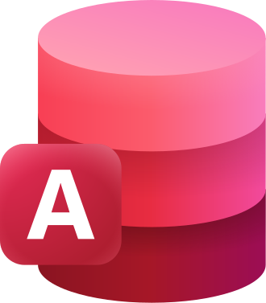

Les outils que nous avons utilisés pour la réalisation de nos missions :
 Microsoft Access:
Cette mission est réalisée dans le cadre d’un aspect d’amélioration de la mise en page des données présentées par Kdou, et de les aider à poursuivre leurs engagements « Eco-Friendly » et se mettre aux nouvelles technologies.
 Structured Query Language (SQL)
Structured Query Language (SQL)
Le langage SQL est principalement utilisé afin de permettre de localiser les données, les structurer et obtenir de façon précise les résultats précis. C'est-à-dire, si l'entreprise souhaite obtenir un chiffre d'affaires ou ajouter un nouveau client, elle peut le faire de façon efficace.
Microsoft Word:
Le rapport final est rédigé dans Word afin de structurer clairement les résultats et les analyses. Les données extraites sont présentées sous forme de tableaux, graphiques et légendes pour une lecture facile. De plus, le logiciel utilise des styles cohérents, permettant une mise en page soignée et facile à lire.
Nos reccomendations pour une éventuelle amélioration :
Kdou peut mettre en place à l'aide de nos reccomendations :
- Un système de gestion automatisé des données: L'intégrité relationelle est alors constamment respectée.
- Un suivi des fournisseurs n'ayant aucun produit dans le catalogue, et permettre leur exclusion
- Des doublons sont toujours présents, il est important de les supprimer. Kdou peut alors mettre en place des tri automatiques pour s'en débarasser.